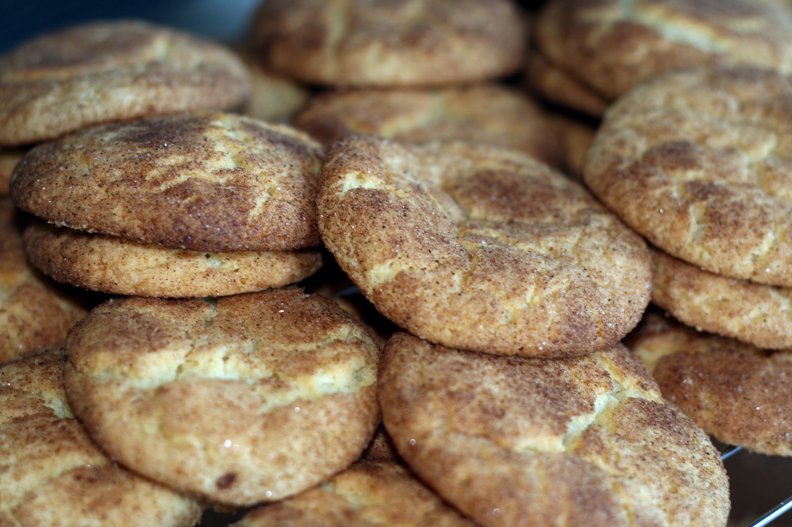

Snickerdoodle Cookie Recipe

You will not regret making this homemade, comforting snickerdoodle cookies! This is a great recipe for kids to make!
Ingredients
- Flour
- Sugar
- Eggs
- Milk
- Cinnamon
- Butter
Steps
- Preheat oven to 350 degrees
- Mix flour, sugar, butter, and cinnamon in a bowl
- Fold milk and eggs
- Mix all together
- Spoon dough into balls and roll in cinnamon sugar mixture
- Place on baking sheet and cook for 15 min